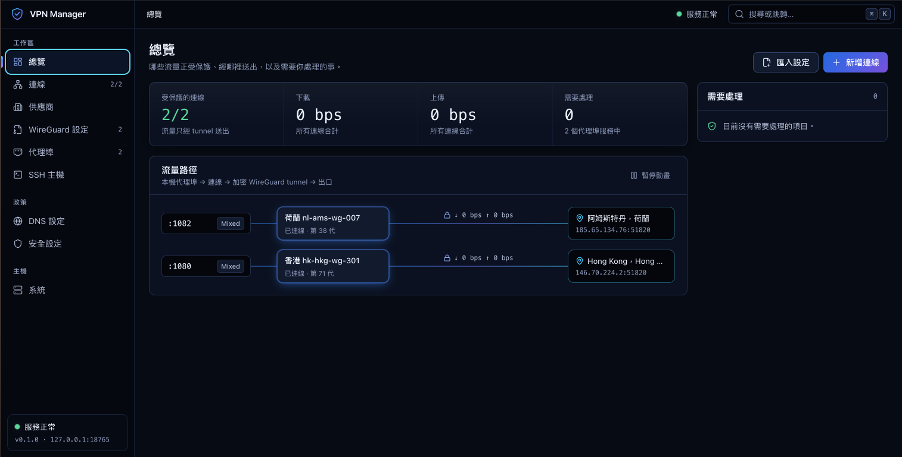
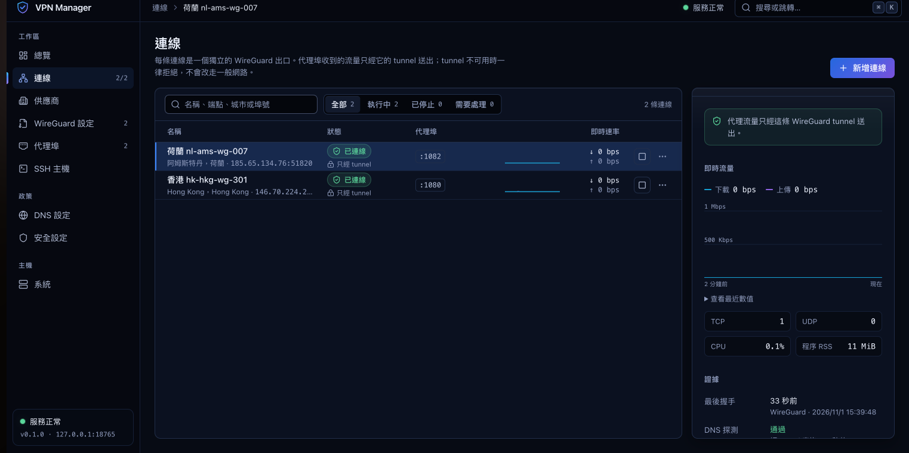
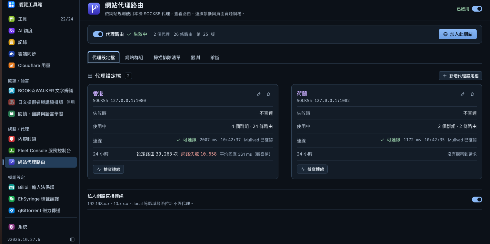

VPN MANAGER / 開発ノート
ホストの元のネットワークは変えない。
指定したアプリは指定した出口だけを使う。
最初に VPN Manager を作りたいと思ったのは、一般的な VPN
クライアントの多くが、コンピューター全体をまとめて切り替えるものだと感じたからです。
でも、私が必要としているのはそれではありません。
どの
App がどの VPN
を使うかを指定し、管理対象外のプログラムにはホストの元のネットワークをそのまま使わせたいのです。
例えば、ブラウザー、ダウンロード用プログラム、そのほかの App
を同時に開いているとします。
ブラウザーの担当は
Instance A、ダウンロード用プログラムの担当は
Instance B、そのほかは元のネットワークを使います。
A と
B は、それぞれ独自の WireGuard
identity、DNS、Gateway、接続リソース、ライフサイクルを持ちます。
A
が切断されたら、ブラウザーはそのままネットワークにつながらなくなる方がよいと思っています。
自動的に
B に移ってはいけませんし、ISP の元の出口に戻ることも許しません。
A が切断された場合：ブラウザーはネットワークにつながらなくなります。
Instance B
と管理対象外のプログラムは通常どおり動作し、一緒に切り替える必要はありません。
異なる VPN プロバイダーのアカウント、Profile、Gateway
も、同じシステムで管理できるようにしたいです。
指定した App や
Service は、できれば OS のネットワーク層で直接隔離したいです。Docker
を使わず、コンピューター全体の default route も変更しません。
トラフィック情報も、作りたい機能の一つです。
各 Instance
がどれだけ通信したのか、どの Gateway が混雑しているのか、DNS
にどれだけ時間がかかったのか、どのプロセスが最も CPU
やメモリーを使っているのかを見たいです。
Connected
と表示されるだけでは、あまり意味がないと思っています。
似たことを実現している人はすでにいますし、netns、Proxy、firewall
を自分で組み合わせて必要な環境を作っている人も少なくありません。
ただ私は、複数
VPN の管理、App
の隔離、障害復旧、監視を一つにまとめ、毎回いろいろなものを自分でつなぎ合わせずに済むようにしたいのです。
まず、システム全体のアーキテクチャから始めます。


全体の制御経路は、まず次のように計画しています：
React UI→VPN Web API / VPN Core→Instance Manager→Instance Controller
ここでは、
Instance Manager を独立プロセスにします。
すべての
Instance
の起動、停止、generation、リソースリース、復旧を担当させます。
Controller
は UI／API の操作意図だけを受け取り、App の TCP／UDP
データは転送しません。
OS 権限を扱う部分の担当は
Platform Manager。
network namespace、process
sandbox、FD、firewall policy、macOS の capture／deny
のいずれも、これが担当します。
ほかのコンポーネントが、便利だからという理由でシステムのネットワーク設定を直接変更することは避けたいです。
Store が状態を保存し、Metrics がデータを収集し、Performance Manager
が分析と許可されたテストを処理します。
これらが App
のパケット経路を妨げてはいけません。
例えば Metrics
やデータベースへの書き込みが遅くなっても、そのために送信中のパケットを待たせてはいけません。新たな状態変更は、元の閉鎖ルールに従って処理します。
| 実行境界 | 主な責任 |
|---|---|
vpn-controllerd |
React の静的アセット、VPN Web API、VPN Core、および Provider／Security／Metrics／Performance の制御調整を提供。 |
vpn-instance-managerd |
Instance をまたぐライフサイクルの唯一の owner。desired state、generation、identity／resource lease、外側の Watchdog、復旧時の照合を管理。 |
vpn-platformd |
高権限 OS 操作を独占。Linux/macOS Adapter、sandbox、FD／policy 作成、spawn、seal、安全性の証拠収集を実行。 |
vpn-stored |
SQLite の唯一の owner。管理対象は
control.sqlite、metrics.sqlite、secret、revision、operation
journal、バックアップ。
|
vpn-instance × N |
VPN ごとの独立 worker。専用の GotaTun、DNS、Gateway、Port、Metrics、内側の Watchdog を所有。 |
vpn-provider-worker |
Provider job ごとに API 操作、route-bound IP preflight、制限付き connector を実行し、Instance の作成や起動・停止を独断で行わない。 |
| macOS system extension（有効な場合） | 管理対象 App の flow capture、deny、bridge を処理し、ネイティブプラットフォームの能力に応じた安全境界を提供。 |
まず、誰が管理し、誰が操作権限を持つかに従ってコンポーネントを分類します。
単に箱をたくさん描くだけでは役に立ちません。重要なのは、あるプロセスが落ちたときに誰に影響するのか、誰が再起動できるのかです。
各 Instance は専用の GotaTun、DNS Controller、Port Controller、Gateway
Manager、Metrics、Watchdog を持ちます。
WireGuard identity、DNS
cache、socket、buffer、queue も分ける必要があります。
CPU、NIC、OS
は共有できますが、A の実行状態を B と混在させるべきではありません。
先に明確にしておきたい点があります。
GotaTun は WireGuard エンジンであり、それ自体が完全な TCP/IP socket
stack ではありません。
そのため、GotaTun を接続しただけで TCP／UDP
の接続処理がすべて揃うわけではなく、この部分は別途処理する必要があります。
Linux では、隔離された network namespace 内の kernel TCP/IP stack
を直接使う方向で考えています。
macOS の明示的な Proxy では、各
Instance が個別に smoltcp と GotaTun を使います。
それぞれの
socket、buffer、queue も独立させ、Controller の SQL や Provider HTTP
呼び出しが実際のネットワーク通信を妨げないようにします。
DNS も Instance に従わせる必要があります。
名前解決に失敗したら失敗として報告し、こっそり
host resolver に問い合わせ直してはいけません。
Gateway が HTTP
CONNECT や SOCKS5 TCP／UDP を受け取ったら、実際に自分の Instance
に渡して宛先への接続を確立させます。
Port Forward の転送先は、同じ
Instance 内で検証済みの App endpoint
に限ります。手間を省くために直接接続してはいけないのが、host の
127.0.0.1。
トラフィックの入口を 3 種類に分けています。
管理対象 App
は先に隔離環境に入り、自分で host
ネットワークを選ぶことはできません。
Gateway
は、HTTP／SOCKS Proxy
に明示的に渡されたトラフィックだけを担当します。App
が別途確立した接続は自動的には保護されません。
Port Forward
は VPN から入ってくるトラフィックです。転送先は同じ Instance
内で有効な次のリースを持つ App のみです：
AppEndpointLease 。
DNS と IPv6 も例外にはできません。
Instance の DNS
経路が使えなければ、問い合わせを行いません。
IPv6 も、検証できる
tunnel
経路がない場合、ホストのネットワークを自動的に通してはいけません。
macOS 側は、実際に少し厄介です。
明示的な Proxy
は作れますが、実際に Proxy に渡された通信だけを扱います。
QUIC、WebRTC、あるいは
App 自身が使うシステム DNS は、別途 socket を作る可能性があります。
そのため、Proxy
があるからといって、App 全体が隔離されたことにはなりません。

Linux の方法は比較的直接的です。
ホストの default route
を変更するつもりはありませんし、物理 NIC を別の namespace
に移すこともしません。
管理対象外の App
は、通常どおり元のネットワークを使います。
Platform Manager は最初に host network namespace 内で、指定した
WireGuard peer だけを許可する UDP socket を作ります。
続いて、制限付き
FD を隔離 namespace 内の VPN worker に渡します。
その namespace
には loopback と TUN しかなく、host に通じる veth／NAT
の平文出口は設けません。
App が送った IP パケットはまず TUN に入り、GotaTun で暗号化され、host
namespace 内で先に作成した UDP FD を通じて WireGuard peer
に送られます。
ただし、socket を host
で作成しただけでは不十分です。
どの IP／port に接続できるのか、誰が
FD を持つのか、Platform policy
が本当に有効なのか、すべて確認する必要があります。
私がより重視するのは、App に通常の host internet 出口がそもそもないことです。
worker
が落ちたら、まずネットワークを切断します。代替経路を探す必要はありません。
VPN
が切断された後に App が勝手に ISP
の出口へ迂回することは、受け入れられません。
ただし、 netns も完全な sandbox ではありません。
App
が別プロセスの FD を継承したり、Unix socket、D-Bus、host IPC
を通じて迂回路を見つけたりする可能性があります。
WireGuard のハンドシェイクが成功しても、App にインターネット接続を始めさせてよいとは限りません。
Instance
を起動するときは、先に隔離環境を作り、デフォルトでは閉鎖しておきます。
worker
が起動した後も、WireGuard
のハンドシェイク、DNS、ヘルスプローブだけを許可します。
現在の設定、Platform
policy、worker generation に問題がないことを確認してから、App と Gateway
を開通させます。
途中で一つでも失敗したら、維持する状態は
blocked。
worker
を再構築するときは、必ず新しくするのが generationです。
Seal された旧 generation は再開通できません。
Manager
の世代交代、Platform epoch の変更、またはその間にユーザーが Start／Stop
を押した場合、それ以前に発行したコマンドはもう有効にしてはいけません。
Watchdog は 2 層に分けます。
Instance 内の Watchdog
は問題を見つけたら自分の ingress
を先に閉じ、その後で障害を報告します。
外側の Instance Manager
が意図の記録、旧リソースの回収、再構築を担当します。
両者が同時に同じ
Instance の restart を奪い合うような状態にはしたくありません。
手動の Stop と
EmergencyStop の優先順位は、必ず最上位にします。
Stop
の際にデータベースが壊れ、最新の停止意図を保存できたかさえ分からないとします。その場合、システムが自動的に再開する根拠にしてはいけないのが、古い
desired=running です。
このときは、入る状態を
recovery_requiredとして、人の確認を待つ方がよいと思っています。
元の TCP session が crash
後に再接続できるかどうかについては、無理に保証するつもりはありません。
間違った出口を通るより、接続が切れる方がよいからです。
UI が Connected／Disconnected の 2
状態だけになることは望んでいません。
例えば、A に設定したのは
desired_state=runningですが、現在の状態は
reconnectingで、さらに
enforcement=blocked。
この 3
つは分けて表示すべきです。
動作を続けてほしいという意図と、今実際に外へ送信できるかどうかは、別のことです。
この流れでは、まず desired=running を Store
に書き込み、Manager が generation と identity lease を予約し、Platform
に実行を依頼するのが PrepareClosed。
worker は最初に
probe_only
で起動します。
tunnel、DNS、policy、現在の権限情報がすべて一致していることを確認して初めて、実行するのが
CommitResume と Activate。
Provider にも問題があります。
VPN Manager
をインストールした直後には、VPN Profile がまだありません。まず Mullvad
や AIRVPN からアカウント、device、WireGuard
設定を取得する必要があります。
では、最初の管理要求はどこを通すのでしょうか？
現在は、初回だけ条件付きの直結を許可することを考えています。
Provider
worker が受け取る、時間、アカウント、HTTPS
origin、DNS、通信量予算を制限した許可が
BootstrapGrant。
最初の有効な Profile
を取得したら、Controller が Instance Manager に最初の VPN
の作成と起動を要求します。
tunnel が管理要求を処理できることを確認したら、まず direct
を閉鎖する意図を Store に書き込み、元の grant と socket
を撤回し、最後に付ける印が
bootstrap_consumed=trueで、そのうえで Provider
全体の出口を設定します。
この順番を崩してはいけません。特に、直結がまだ生きているのに切替完了と言ってはいけません。
以降、すべての Provider API はユーザーが選んだ VPN Instance
を通します。
その Instance が落ちたら、表示するのは
blockedで、host への切戻しも、別の Instance
への自動切替も禁止です。
どうしても処理できなければ、ユーザーが新しい出口を手動で選ぶか、明示的に一度限りで許可するのが
rebootstrap。
また、実際に Provider HTTP request を送信する前には、毎回 IP preflight
を実施したいと考えています。
retry、pagination、token refresh
を含め、同一の route tuple、IP family、connector を確認します。この
request だけに使える許可である
ProviderRequestPermit
を取得して初めて送信できます。
現時点では、preflight deadline を 3
秒、dispatch window を 2 秒と仮定しています。
これでは遅くなり、checker
quota も増えますが、少なくとも UI に数分前に表示された IP
を、現在の経路選択の証拠にはしません。
UI では、どの Instance を選んだのか、今回の request が本当に制御された
tunnel を通ったのか、外部 IP がその Provider
の出口なのかを、分けて表示する必要があります。
例えば、Mullvad
Instance を選んで AIRVPN の管理 API
を呼び出すことは、私の設定に完全に沿った動作になり得ます。
外部 IP
が AIRVPN ではないからといって、通信が漏れているとは限りません。
プロバイダーの統合は、できるだけ同じ流れにしたいと考えています。
Profile
の検証、Instance
の作成、出口の紐付けは共通の制御ロジックで処理します。Adapter
に任せるのは、Mullvad、AIRVPN それぞれの device、server、port-forward
API です。
Provider を追加するとき、各 Adapter に Instance
の直接起動・停止や host socket の作成権限を持たせたくありません。
Provider API にはもう一つ厄介な点があります。request の送信後に timeout
しても、相手が実行しなかったとは限りません。
例えば、device
の作成自体は成功していて、返答だけ届かなかった可能性があります。
この場合、まず記録する状態は
unknownで、その後 operation journal
を使って遠隔側の状態を確認します。そのまま再送すべきではありません。
ブートストラップ全体が完了したといえるには、新 Instance
が管理要求を送信でき、元の direct
権限が確実に撤回されたことを確認し、最後に実行するのが
CommitEgress。
切替中のある結果を確認できない場合、まず留めておきたい状態は
blockedで、状態を明らかにします。
VPN Manager が、最後には VPN
接続を示す緑のランプをいくつか表示するだけのものになってほしくありません。
どの
Instance が通信量を消費しているのか、Gateway
にアクティブな接続がいくつあるのか、DNS
の遅延が上がっていないか、どのプロセスが CPU、メモリー、queue
を占有しているのかを知りたいです。
Metrics Service と Performance Manager は分けます。
Metrics Service
は統計データを収集します。例えば Instance counters、Gateway payload
bytes、WireGuard UDP bytes、DNS の成功・失敗、active flows、CPU、RSS
です。
Performance Manager
は、スループット、遅延、リソース効率の分析、または私が明示的に開始した
benchmark の実行を担当します。
速度測定のために、勝手に Instance
の状態を変えてはいけません。
Metrics
はデータプレーンにバックプレッシャーをかけない方がよいと考えています。
Instance
は毎秒 1 回、上限のある snapshot を送り、Collector
が順序検証と重複排除を行い、その後 CBOR／Zstd で圧縮・集約します。
収集側が詰まったら、いくつかのサンプルを捨て、表示するのは
gap
だけで十分です。パケットをデータベース待ちにしてはいけません。
トラフィックの数値も、いい加減に計算してはいけません。
Gateway
payload bytes と WireGuard UDP bytes
は異なる層の統計なので、足し合わせて総通信量にしてはいけません。
counter
reset
やデータ中断があった場合、グラフには欠損または不明を表示すべきで、そのまま
0 として描いてはいけません。
goodput
にはさらに受信側の確認が必要で、sender counter
だけで計算してはいけません。
トラフィック監視でも、すべてを記録する必要はありません。
デフォルトでは
counters、histograms、必要なエラー情報を集めるだけで十分です。
DNS
query name、完全な URL、パケット payload をすべて Metrics
に詰め込みたいとは思いません。